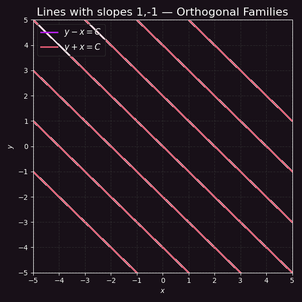
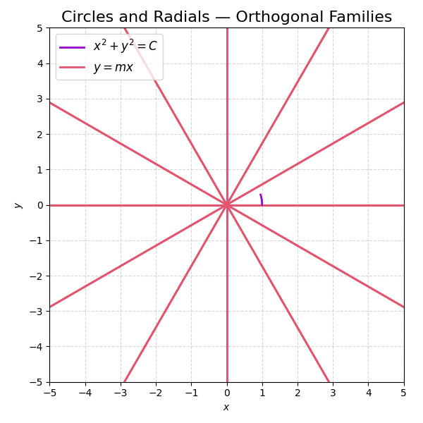
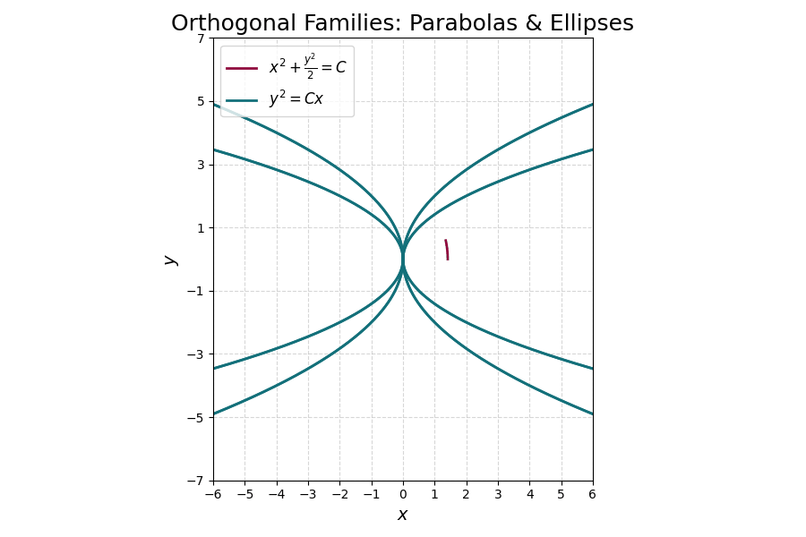

The lines \( y - x = C \) (slope \( 1 \)) and \( y + x = C \) (slope \( -1 \)) meet everywhere at \( 90^{\circ} \): the slopes multiply to \( -1 \).


The circles \( x^{2}+y^{2}=C \) satisfy \( y'=-x/y \); replacing the slope by \( -1/f \) gives \( y'=y/x \), whose solutions are the radial lines \( y=mx \).
The parabolas \( y^{2}=Cx \) have slope \( y/(2x) \). The orthogonal family solves \( y\,y'=-2x \):
— ellipses crossing every parabola at a right angle.
